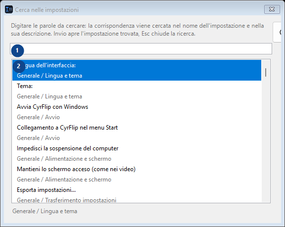
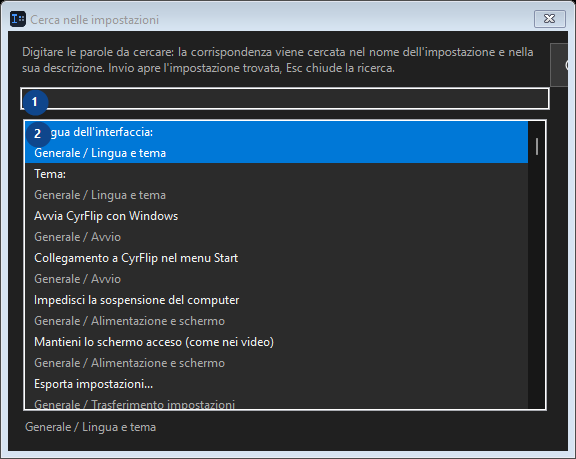

Cerca nelle impostazioni
A cosa serve
Leggi le spiegazioni numerate, scegli i valori necessari e continua con il comando della finestra.


Ordine delle operazioni
Leggi le spiegazioni numerate, scegli i valori necessari e continua con il comando della finestra.
Elementi
1. Cerca nelle impostazioni
Scegli o inserisci il valore indicato dall’etichetta vicina. Controllalo prima di continuare.
Le tue scorciatoie2. Digitare le parole da cercare: la corrispondenza viene cercata nel nome dell'impostazione e nella sua descrizione. Invio apre l'impostazione trovata, Esc chiude la ricerca.
Quest’area mostra il contenuto o lo stato attuale. Seleziona una voce per utilizzarla.
Le tue scorciatoie